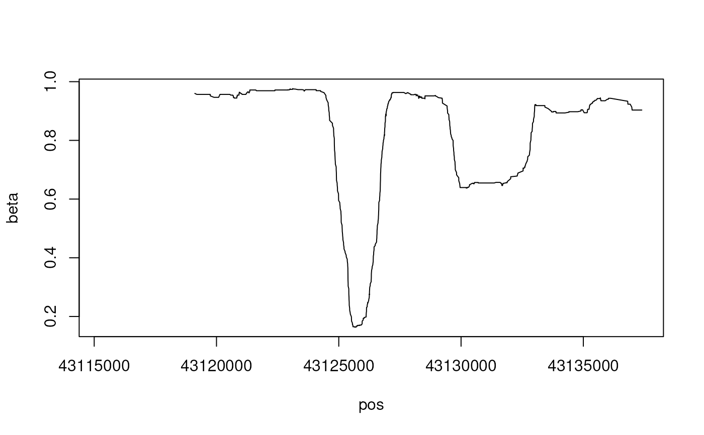
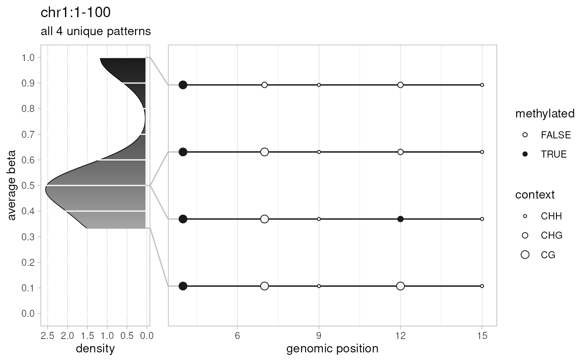

This function counts methylated and unmethylated DNA bases taking into the account average methylation level of the entire sequence read.
Usage
generateCytosineReport(
bam,
report.file = NULL,
cytosine.context = c("CG", "CHG", "CHH", "CxG", "CX"),
filter.reads = TRUE,
min.context.sites = 0,
max.outofcontext.beta = 0.1,
threshold.reads = TRUE,
min.context.beta = 0.5,
report.context = cytosine.context,
...,
gzip = FALSE,
verbose = TRUE
)Arguments
- bam
BAM file location string OR preprocessed output of
preprocessBamfunction. Read more about BAM file requirements and BAM preprocessing atpreprocessBam.- report.file
file location string to write the cytosine report. If NULL (the default) then report is returned as a
data.tableobject.- cytosine.context
string defining cytosine methylation context used for filtering and/or thresholding the reads:
"CG" (the default) – within-the-context: CpG cytosines (called as zZ), out-of-context: all the other cytosines (hHxX)
"CHG" – within-the-context: CHG cytosines (xX), out-of-context: hHzZ
"CHH" – within-the-context: CHH cytosines (hH), out-of-context: xXzZ
"CxG" – within-the-context: CG and CHG cytosines (zZxX), out-of-context: CHH cytosines (hH)
"CX" – all cytosines are considered within-the-context, this effectively results in no thresholding
- filter.reads
boolean defining if sequence reads with too few context bases or too high out-of-context cytosine methylation should be filtered out (e.g., reads resulting from incompletely bisulfite-converted templates). Default: TRUE. Filtering is strongly recommended for short-read sequencing (bisulfite or enzymatic) because it removes reads from incompletely converted DNA molecules.
- min.context.sites
non-negative integer for minimum number of cytosines within the `cytosine.context` (default: 0, i.e., all reads will satisfy this criterion). When `min.context.sites`>0, reads containing fewer within-the-context cytosines will not be thresholded and will be ignored in further computations. This option has no effect when read filtering is disabled.
- max.outofcontext.beta
real number in the range [0;1] (default: 0.1). Reads with average beta value for out-of-context cytosines above this threshold will not be thresholded and will be ignored in further computations. This option has no effect when read filtering is disabled.
- threshold.reads
boolean defining if sequence reads (read pairs) should be thresholded before counting methylated cytosines (default: TRUE). Disabling thresholding (together with filtering) makes the report virtually indistinguishable from the ones generated by other software, such as Bismark or Illumina DRAGEN Bio IT Platform. Thresholding is not recommended for long-read sequencing data because long reads might cover multiple regions with very different cytosine methylation.
- min.context.beta
real number in the range [0;1] (default: 0.5). Reads with average beta value for within-the-context cytosines below this threshold are considered completely unmethylated (all C are counted as T). This option has no effect when read thresholding is disabled.
- report.context
string defining cytosine methylation context to report (default: value of `cytosine.context`).
- ...
other parameters to pass to the
preprocessBamfunction. Options have no effect if preprocessed BAM data was supplied as an input.- gzip
boolean to compress the report (default: FALSE).
- verbose
boolean to report progress and timings (default: TRUE).
Value
data.table object containing cytosine
report in Bismark-like format or NULL if report.file was specified. The
report columns are:
rname — reference sequence name (as in BAM)
strand — strand
pos — cytosine position
context — methylation context
meth — number of methylated cytosines
unmeth — number of unmethylated cytosines
Details
The function reports cytosine methylation information using BAM file or data as an input. In contrast to the other currently available software, reads (for paired-end sequencing alignment files - read pairs as a single entity) can be thresholded by their average methylation level before counting methylated bases, effectively resulting in hypermethylated variant epiallele frequency (VEF) being reported instead of beta value. The function's logic is explained below.
NB: you can modify and/or run this example – see Examples section at the bottom of this page.
Let's suppose we have a BAM file with four reads, all mapped to the "+" strand of chromosome 1, positions 1-16. Assuming the following values for the filtering and thresholding parameters (cytosine.context = "CG", filter.reads=TRUE, min.context.sites = 2, max.outofcontext.beta = 0.1, threshold.reads = TRUE, min.context.beta = 0.5), the input and results will look as following:
| methylation string | filter | threshold | explained | methylation reported |
| ...Z..x+.h..x..h. | excluded | <NA> | min.context.sites < 2 (only one zZ base) | all cytosines unmethylated |
| ...Z..z.h..x..h. | pass | above | pass all criteria | only C4 (Z at position 4) is methylated |
| ...Z..z.h..X..h. | excluded | <NA> | max.outofcontext.beta > 0.1 (1XH / 3xXhH = 0.33) | read excluded from reporting |
| ...Z..z.h..z-.h. | pass | below | min.context.beta < 0.5 (1Z / 3zZ = 0.33) | all cytosines unmethylated |
Since the reads number one and three are filtered out, and only the second read will satisfy the thresholding criteria, the following CX report will be produced (given that all reads map to chr1:+:1-16):
| rname | strand | pos | context | meth | unmeth |
| chr1 | + | 4 | CG | 1 | 1 |
| chr1 | + | 7 | CG | 0 | 2 |
| chr1 | + | 9 | CHH | 0 | 2 |
| chr1 | + | 15 | CHH | 0 | 2 |
(Disclaimer: the cytosine base at position 12 is absent in the report, because its context cannot be determined based on two reads that passed the filtering: in one of the reads this base is in CG context and in the other in CHG context. Since none of these contexts is present in more than a half of the reads, the base is skipped.)
With the read filtering and thresholding disabled (filter.reads=FALSE, threshold.reads = FALSE) all reads will be included and all methylated bases will retain their status, so the CX report will be very similar (nearly identical) to the reports produced by other methylation callers (such as Bismark or Illumina DRAGEN Bio IT Platform):
| rname | strand | pos | context | meth | unmeth |
| chr1 | + | 4 | CG | 4 | 0 |
| chr1 | + | 7 | CG | 0 | 3 |
| chr1 | + | 9 | CHH | 0 | 4 |
| chr1 | + | 12 | CHG | 1 | 2 |
| chr1 | + | 15 | CHH | 0 | 4 |
Other notes:
Methylation string bases in unknown context ("uU") are simply ignored, which, to the best of our knowledge, is consistent with the behaviour of other tools.
In order to mitigate the effect of sequencing errors (leading to rare variations in the methylation context, as in reads 1 and 4 above), the context present in more than 50% of the reads is assumed to be correct, while all bases at the same position but having other methylation context are simply ignored. This allows reports to be prepared without using the reference genome sequence.
The downside of not using the reference genome sequence is the inability to determine the actual sequence of triplet for every base in the cytosine report. Therefore this sequence is not reported, and this won't change until such information will be considered as worth adding.
Please also note, that read thresholding by an average methylation level (as explained above) makes little sense for long-read sequencing alignments, as such reads can cover multiple regions with very different DNA methylation properties.
See also
`values` vignette for a comparison and visualisation of epialleleR output values for various input files. `epialleleR` vignette for the description of usage and sample data.
preprocessBam for preloading BAM data,
generateBedReport for genomic region-based statistics,
generateVcfReport for evaluating epiallele-SNV associations,
extractPatterns for exploring methylation patterns and
plotPatterns for pretty plotting of its output,
generateBedEcdf for analysing the distribution of per-read
beta values.
Examples
capture.bam <- system.file("extdata", "capture.bam", package="epialleleR")
# CpG report with filtering and thresholding
cg.report <- generateCytosineReport(capture.bam)
#> Checking BAM file:
#> short-read, paired-end, name-sorted alignment detected
#> Reading paired-end BAM file
#> [0.011s]
#> Filtering and thresholding reads
#> [0.001s]
#> Preparing cytosine report
#> [0.012s]
# CX report with filtering but without thresholding
cx.report <- generateCytosineReport(capture.bam, threshold.reads=FALSE,
report.context="CX")
#> Checking BAM file:
#> short-read, paired-end, name-sorted alignment detected
#> Reading paired-end BAM file
#> [0.011s]
#> Filtering reads
#> [0.002s]
#> Preparing cytosine report
#> [0.013s]
# Long-read sequencing with both filtering and thresholding disabled
long.bam <- system.file("extdata", "longread.bam", package="epialleleR")
long.data <- preprocessBam(bam=long.bam, min.mapq=30, min.baseq=20,
min.prob=178)
#> Checking BAM file:
#> long-read, single-end, unsorted alignment detected
#> Reading single-end BAM file
#> [0.004s]
cg.report <- generateCytosineReport(bam=long.data, filter.reads=FALSE,
threshold.reads=FALSE)
#> Skipping filtering/thresholding
#> [0.000s]
#> Preparing cytosine report
#> [0.025s]
plot(cg.report[, .(pos, beta=data.table::frollmean(meth/(meth+unmeth), 100))], type="l")

# toy example from the description
temp.bam <- tempfile(fileext=".bam")
temp.bed <- as("chr1:1-100", "GRanges")
simulateBam(output.bam.file=temp.bam, rname="chr1", XG="CT",
seq=c("AGACGTTAGTAATAGTA", "AAACGTTGTAATAGTA",
"AGACGTTGTAACAGTA", "AAACGTTGTAATGTA"),
XM=c( "...Z..x+.h..x..h.", "...Z..z.h..x..h.",
"...Z..z.h..X..h.", "...Z..z.h..z.h."),
cigar=c("7M1I9M", "16M", "16M", "12M1D3M"))
#> Writing sample BAM
#> [0.003s]
#> [1] 4
# with read filtering and thresholding (default)
generateCytosineReport(bam=temp.bam, report.context="CX")
#> Checking BAM file:
#> short-read, single-end, unsorted alignment detected
#> Reading single-end BAM file
#> [0.002s]
#> Filtering and thresholding reads
#> [0.000s]
#> Preparing cytosine report
#> [0.001s]
#> rname strand pos context meth unmeth
#> <fctr> <fctr> <int> <fctr> <int> <int>
#> 1: chr1 + 4 CG 2 1
#> 2: chr1 + 7 CG 0 2
#> 3: chr1 + 9 CHH 0 3
#> 4: chr1 + 12 CHG 0 2
#> 5: chr1 + 15 CHH 0 3
# with read filtering (nondefault min.context.sites) and thresholding
generateCytosineReport(bam=temp.bam, report.context="CX",
min.context.sites=2)
#> Checking BAM file:
#> short-read, single-end, unsorted alignment detected
#> Reading single-end BAM file
#> [0.001s]
#> Filtering and thresholding reads
#> [0.000s]
#> Preparing cytosine report
#> [0.001s]
#> rname strand pos context meth unmeth
#> <fctr> <fctr> <int> <fctr> <int> <int>
#> 1: chr1 + 4 CG 1 1
#> 2: chr1 + 7 CG 0 2
#> 3: chr1 + 9 CHH 0 2
#> 4: chr1 + 15 CHH 0 2
# without read filtering
generateCytosineReport(bam=temp.bam, report.context="CX",
filter.reads=FALSE)
#> Checking BAM file:
#> short-read, single-end, unsorted alignment detected
#> Reading single-end BAM file
#> [0.001s]
#> Thresholding reads
#> [0.000s]
#> Preparing cytosine report
#> [0.001s]
#> rname strand pos context meth unmeth
#> <fctr> <fctr> <int> <fctr> <int> <int>
#> 1: chr1 + 4 CG 3 1
#> 2: chr1 + 7 CG 0 3
#> 3: chr1 + 9 CHH 0 4
#> 4: chr1 + 12 CHG 1 2
#> 5: chr1 + 15 CHH 0 4
# without read thresholding
generateCytosineReport(bam=temp.bam, report.context="CX",
threshold.reads=FALSE)
#> Checking BAM file:
#> short-read, single-end, unsorted alignment detected
#> Reading single-end BAM file
#> [0.001s]
#> Filtering reads
#> [0.000s]
#> Preparing cytosine report
#> [0.000s]
#> rname strand pos context meth unmeth
#> <fctr> <fctr> <int> <fctr> <int> <int>
#> 1: chr1 + 4 CG 3 0
#> 2: chr1 + 7 CG 0 2
#> 3: chr1 + 9 CHH 0 3
#> 4: chr1 + 12 CHG 0 2
#> 5: chr1 + 15 CHH 0 3
# both read filtering and thresholding disabled = similar to other software
generateCytosineReport(bam=temp.bam, report.context="CX",
filter.reads=FALSE, threshold.reads=FALSE)
#> Checking BAM file:
#> short-read, single-end, unsorted alignment detected
#> Reading single-end BAM file
#> [0.002s]
#> Skipping filtering/thresholding
#> [0.000s]
#> Preparing cytosine report
#> [0.000s]
#> rname strand pos context meth unmeth
#> <fctr> <fctr> <int> <fctr> <int> <int>
#> 1: chr1 + 4 CG 4 0
#> 2: chr1 + 7 CG 0 3
#> 3: chr1 + 9 CHH 0 4
#> 4: chr1 + 12 CHG 1 2
#> 5: chr1 + 15 CHH 0 4
# patterns plotted
plotPatterns(
extractPatterns(bam=temp.bam, bed=temp.bed, extract.context="CX"),
plot.context="CX", npatterns.per.bin=Inf
)
#> Checking BAM file:
#> short-read, single-end, unsorted alignment detected
#> Reading single-end BAM file
#> [0.002s]
#> Extracting methylation patterns
#> [0.009s]
#> 4 patterns supplied
#> 4 unique
#> 4 most frequent unique patterns were selected for plotting using 10 beta value bins:
#> [0,0.1) [0.1,0.2) [0.2,0.3) [0.3,0.4) [0.4,0.5) [0.5,0.6) [0.6,0.7) [0.7,0.8) [0.8,0.9) [0.9,1]
#> 0 0 0 1 0 2 0 0 0 1
